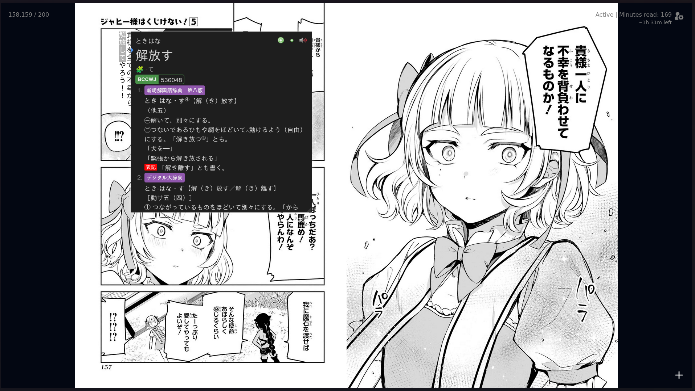

Yomitan ja Mokuro
Kuvassa mokuro ja yomitan toimimassa yhdessa
Yomitan
Yomitan on selainlisäosa jonka avulla voit skannata sanoja verkkosivulla jonka jälkeen ohjelma avaa sanakirjan ponnahdusikkunassa.
Tämä on ehkä tärkein ohjelma jota tulet tarvitsemaan.
https://yomitan.wiki/
Mokuro
Mokuro on ohjelma joka antaa sinun skannata Japanilaisia kuvia jonka jälkeen voit avata ne selaimessa ja käyttää yomitania skannaamaan tekstiä.
Ohjelmaa käytetään pääosin mangan skannaamiseen mutta ei ole mitään syytä miksei sitä voisi käyttää muuhunkin.
https://github.com/kha-white/mokuro